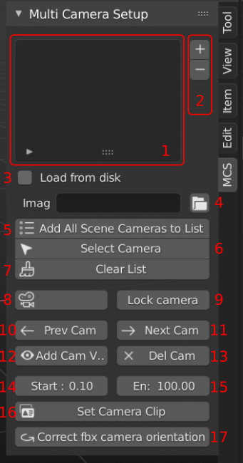
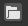
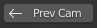
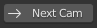

General information
- This is WORKABLE addon but WITHOUT poka-yoke!
- Imported camera's and image's names MUST be same accordingly. For example if background image has name
"camera_001.jpg", camera name in scene must be the same but without extension - "camera_001".
Video Instructions
UI Review

- MCS list.
- button adds selected cameras into MCS list, - deletes selected camera in MCS list camera.
- Check box is to load images from disk always. Useful to update images if they changed in folder.
- String field and button to set image folder path.
- Add all cameras in scene to MCS list
- Select camera in scene highlighted in MCS list.
- Clear MCS list.
- Indicates name of current active camera in viewport. When pressed - select the camera in scene.
- Enable view navigation within the camera view.
- Set previous camera in MCS list to viewport.
- Set next camera in MCS list to viewport.
- Set selected in MCS list camera to viewport.
- Delete current active camera in viewport from MCS list.
- Adjust near clipping camera distance(in meters).
- Adjust far clipping camera distance(in meters).
- Set the clipping camera distances.
- Fix fbx camera import wrong direction. Select cameras in scene and press the button.
Quick instruction
- Import fbx/alembic file with cameras into Blender scene.
- Check the camera names and background images names in folder. They must be the same.
- Click on MCS tab in N button panel.
- Press "Add All Scene Cameras to List" button. It's load all cameras into MCS camera list.
- Press  button to select folder with background images. DO not select files in the folder.
- Just start pressing  or  buttons to switch cameras in viewport. Background images will load automatically.
- To assign shortcuts for Prev Cam and Nest Cam buttons use 'mcs_addon.prev_in_list' and 'mcs_addon.next_in_list' addon's operators